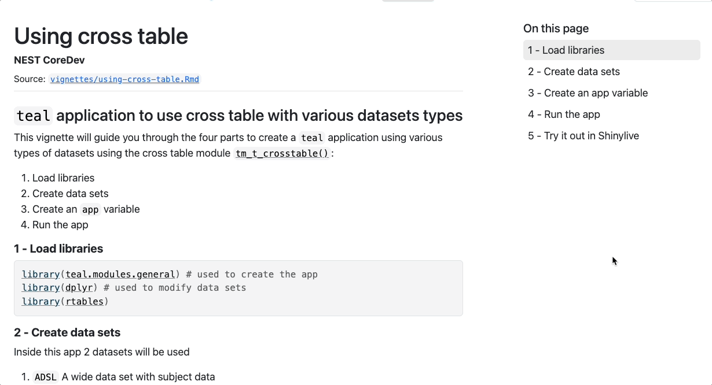

Overview
This package provides a roxygen2 extension that automatically takes the code from the @examples tag that follows and crate an URL to the shinylive service. During the documentation build, a new section is added to the function manual that contains aforementioned link as well as iframe to the application itself.
Install
# install.packages("pak")
pak::pak("insightsengineering/roxy.shinylive")Usage
Creating a URL manually
code <- "\"Hello World\""
roxy.shinylive::create_shinylive_url(code, mode = "editor")This returns the following URL:
In the roxygen2 documentation
In your DESCRIPTION file, add the following:
Then in your package documentation:
#' (docs)
#' @examplesShinylive
#' @examples
#' (example code with a Shiny app)Which would produce a following output in your documentation:
\section{Examples in Shinylive}{
\describe{
\item{example-1}{
\href{https://shinylive.io/r/app/#code=...}{Open in Shinylive}
\if{html}{\out{<script type="text/javascript">(custom JS)</script>}}
\if{html}{\out{<iframe src="https://shinylive.io/r/app/#code=..."></iframe>}}
}
\item{example-2}{
\href{https://shinylive.io/r/app/#code=...}{Open in Shinylive}
\if{html}{\out{<script type="text/javascript">(custom JS)</script>}}
\if{html}{\out{<iframe src="https://shinylive.io/r/app/#code=..."></iframe>}}
}
...
}
}
example of function
In the vignettes
In your DESCRIPTION file, add the following:
Then in your vignette:
```{r shinylive_url, echo = FALSE, results = 'asis'}
# extract the code from knitr code chunks by ID
code <- paste0(c(
... # add more IDs if needed
knitr::knit_code$get("app"),
knitr::knit_code$get("shinyapp")
), collapse = "\n")
url <- roxy.shinylive::create_shinylive_url(code)
cat(sprintf("[Open in Shinylive](%s)\n\n", url))
```
```{r shinylive_iframe, echo = FALSE, out.width = '150%', out.extra = 'style = "position: relative; z-index:1"', eval = knitr::is_html_output() && identical(Sys.getenv("IN_PKGDOWN"), "true")}
knitr::include_url(url, height = "800px")
```

example of vignette
See the package documentation for more details.
See the example implementation in the teal.modules.general or teal.modules.clinical packages.